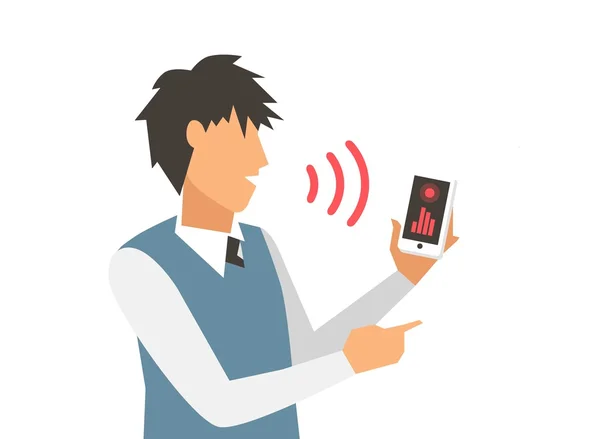

Nuestras Características



PETCARE
PetCare utiliza tecnología IoT (Internet de las Cosas) para conectar dispensadores inteligentes y otros dispositivos con tu aplicación móvil. Gracias a los sensores incorporados, puedes monitorear el consumo de alimento y agua, recibir alertas automáticas y consultar reportes en tiempo real sobre los hábitos de tus mascotas. Toda la información se envía a la nube para ofrecerte control remoto, comodidad y seguridad desde cualquier lugar. En PetCare, unimos la innovación tecnológica con el amor por los animales, facilitando su cuidado diario y fortaleciendo el vínculo entre las personas y sus compañeros más fieles.
PetCare permite visualizar en tiempo real el estado y comportamiento de todos los dispositivos conectados del hogar. Debido a esta funcionalidad, el usuario puede identificar qué equipos están encendidos, cuantos alimentos y agua han proporcionado y en que horarios lo hicieron. Esto no solo ayuda a que los usuarios puedan alimentar en su momento a las mascotas, sino que también ayudará a prevenir una alimentación en exceso, generándoles así una mayor tranquilidad mientras no están en casa.
PetCare analiza los patrones de comportamiento de los dispositivos y esta función permite detectar comportamientos raros como dispositivos que se apagaron sin motivo alguno o proporcionaron mas alimentos de lo que se le configuro. Además generará consejos automáticos en base a estos patrones detectados y ofrece reportes automáticos y visuales que ayudan al usuario a entender como han estado los niveles de agua y alimentos que tuvieron sus mascotas y así tomar decisiones para mejorar la experiencia de estos pequeños.
PetCare permite programar y controlar automáticamente los dispositivos del hogar según horarios que pueden ser establecidos por las preferencias del usuario. Con esta funcionalidad, los usuarios pueden establecerlas en base a los horarios de alimentación con el que tienen acostumbrados a sus mascotas y ya no tendrán ese temor de que sus mascotas no coman a sus horas y esto favorece mucho la confianza del usuario a PetCare.
Nuestra aplicación sigue los principios de usabilidad de Jakob Nielsen para garantizar la mejor experiencia de usuario:
PetCare muestra en tiempo real el estado de los dispensadores y bebederos inteligentes, con indicadores visuales que informan el nivel de comida, agua y la conexión de los dispositivos.
PetCare utiliza íconos y términos relacionado con el cuidado de mascotas para que los usuarios identifiquen fácilmente cada función y naveguen de forma intuitiva.
Los usuarios de PetCare pueden pausar la dispensación de comida, ajustar horarios o modificar configuraciones en cualquier momento, manteniendo siempre el control total sobre el cuidado de sus mascotas.
Mantenemos un diseño coherente en toda la aplicación, pues utilizamos colores, iconos y estilos de botones uniformes para que la navegación sea clara y familiar para el usuario.
Se implemento confirmaciones antes de realizar acciones importantes, como modificar horarios de alimentación o confirmar un pago y así se evita configuraciones incorrectas y algún posibles error involuntario por parte del usuario.
En la pantalla principal se muestran los apartados y acciones más frecuentadas, así como poder ver los dispositivos registrados, lo cual permite al usuario tener un acceso rápido sin tener que recordar menús o configuraciones previas.
PetCare ofrece accesos rápidos para que los usuarios experimentados puedan ahorrar tiempo, mientras mantiene una interfaz sencilla y clara para quienes recién comienzan a usar la aplicación.
La interfaz de PetCare presenta solo la información esencial, con un diseño limpio y organizado que resalta los datos más importantes sobre la alimentación y bienestar de las mascotas, evitando distracciones visuales.
PetCare muestra mensajes de error claros y específicos, indicando la causa del problema y cómo resolverlo. Por ejemplo: “No se pudo conectar al dispensador", "Verifica que esté encendido y conectado a la app.”
PetCare ofrece tutoriales interactivos, una sección de preguntas frecuentes y asistencia en línea para ayudar a los usuarios en la instalación, configuración y uso de sus dispositivos inteligentes.